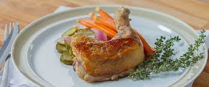

a Delicously cooked chicken Confit. what's more to ask? Confit is the act of preserving or slow-cooking meat in fat to enhance the flavour of the meat. it creates a soft, flavourable chicken that isn't dry.
Sous Vide Chicken Confit
a Delicously cooked chicken Confit. what's more to ask? Confit is the act of preserving or slow-cooking meat in fat to enhance the flavour of the meat. it creates a soft, flavourable chicken that isn't dry.
Ingriedients:
Instructions